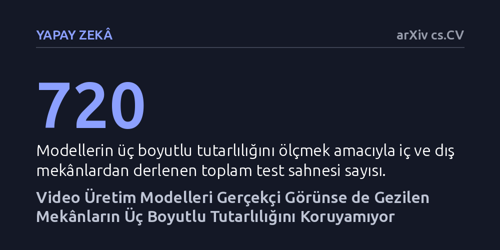

YAPAY-ZEKA · arXiv cs.CV · 2026-10-17
Video üreten yapay zekâların üç boyutlu mekân tutarlılığı 720 farklı senaryo ve 27 modelde sistematik olarak test edildi. İnandırıcı kareler üretilmesine rağmen, modellerin aynı noktaya geri dönüldüğünde oluşturdukları nesneleri ve üç boyutlu geometriyi korumakta zorlandığı belirlendi.
Görsel olarak kusursuz görünen yapay zekâ videolarının arkasında aslında sağlam ve kararlı bir üç boyutlu fiziksel dünya bulunmadığını gösterir.

Son dönemde geliştirilen video üretim modelleri, ilk bakışta gerçeğinden ayırt edilmesi zor görüntüler ve son derece akıcı sahneler oluşturabiliyor. Kamera bir sokakta ilerliyor, bir evin odalarında geziniyor veya doğada süzülüyor hissi veren bu videolar insan gözüne oldukça inandırıcı geliyor. Ancak bu görsel çekicilik, arka planda fizik kurallarına uyan ve derinliği olan tutarlı bir üç boyutlu dünyanın var olduğu anlamına gelmiyor.
Bir simülasyonun veya sanal ortamın işlevsel olabilmesi için sadece güzel görünmesi yetmez; aynı zamanda mekânsal belleğe sahip olması gerekir. Kamera bir nesnenin etrafında döndüğünde arka plandaki detayların yerli yerinde kalması veya bir köşeyi dönüp az sonra aynı yere geri baktığınızda az önce gördüğünüz nesnelerin kaybolmaması beklenir. Araştırmacılar, mevcut modellerin bu tür temel mekânsal tutarlılık testlerinden geçip geçemediğini kapsamlı şekilde sorguluyor.
Araştırmacılar, video üreticilerinin mekânsal yeteneklerini ayrıntılı olarak incelemek amacıyla 'Orbia' adını verdikleri yeni bir test sistemi geliştirdi. Bu sistem, modelleri üç temel boyutta sınıyor: girdi görüntüsünü koruma, üretilen içeriğin kalıcılığı ve üç boyutlu iç tutarlılık. Bu sayede modelin yalnızca kendisine verilen ilk fotoğrafa ne kadar sadık kaldığı değil, ilerlerken kendisinin uydurduğu yeni alanları aklında tutup tutamadığı da ölçülüyor.
Test düzeneği; kamuya açık veri setleri, özel saha çekimleri ve bilgisayar simülasyonlarından derlenen iç ve dış mekân sahneleriyle hazırlandı. Testlerde modeller sanal bir rotada ilerletilip ardından aynı noktaya geri döndürülüyor. Bu süreçte renk ve derinlik haritaları, farklı bakış açılarından elde edilen geometrik veriler ve nesne eşleşmeleri bilgisayar ortamında hassas matematiksel yöntemlerle karşılaştırılıyor.
Araştırmada metin komutlarıyla, kamera hareketleriyle veya eylemlerle yönlendirilen 27 farklı video modeli kapsamlı testlerden geçirildi. Ortaya çıkan en belirgin sonuç, modellerin tek tek karelerde görsel olarak etkileyici olmalarına rağmen, uzun süreli keşiflerde ve geri dönüşlerde mekânı kararlı tutamamaları oldu.
Özellikle kameranın yeni bir alana geçip tekrar başlangıç noktasına döndüğü anlarda, modellerin daha önce kendi ürettikleri nesneleri unuttukları ve sahneyi baştan kurguladıkları gözlemlendi. Ayrıca farklı açılardan çekilen görüntülerin derinlik ve ölçek hesaplamaları birbiriyle örtüşmedi; yani üretilen sahneler tek bir gerçekçi üç boyutlu uzayı tarif etmekte yetersiz kaldı.
Bu çalışma, video üreten yapay zekâların henüz bağımsız ve güvenilir birer 'dünya simülatörü' olmaktan uzak olduğunu net bir şekilde ortaya koyuyor. Eğlence ve video kurgusu alanında göz alıcı sonuçlar veren bu sistemler, robotik eğitimi veya otonom araç simülasyonu gibi fiziksel doğruluğun hayati olduğu alanlarda doğrudan kullanılamaz.
Yapay zekânın dünyayı gerçekten kavrayabilmesi için sadece ardışık pikselleri tahmin etmesi değil, nesnelerin üç boyutlu uzaydaki kalıcılığını ve geometrik kurallarını öğrenmesi gerekiyor. Orbia test platformu, mühendislerin modellerdeki bu mekânsal eksiklikleri doğrudan teşhis etmelerine ve gelecekte daha kalıcı sanal dünyalar geliştirmelerine zemin hazırlıyor.